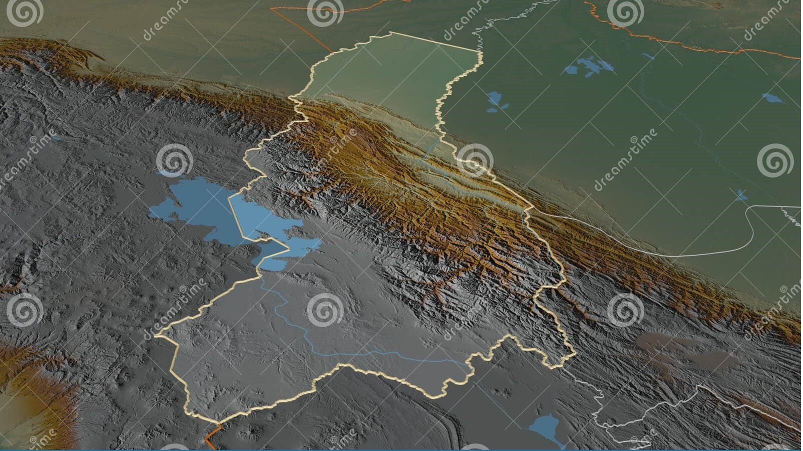
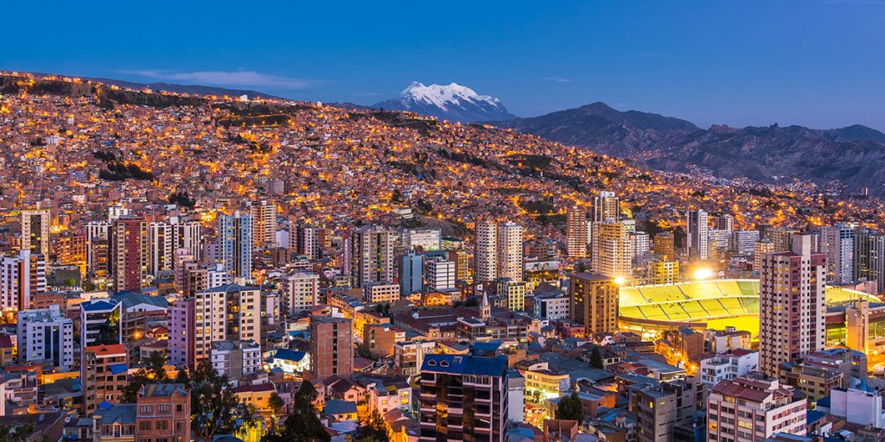
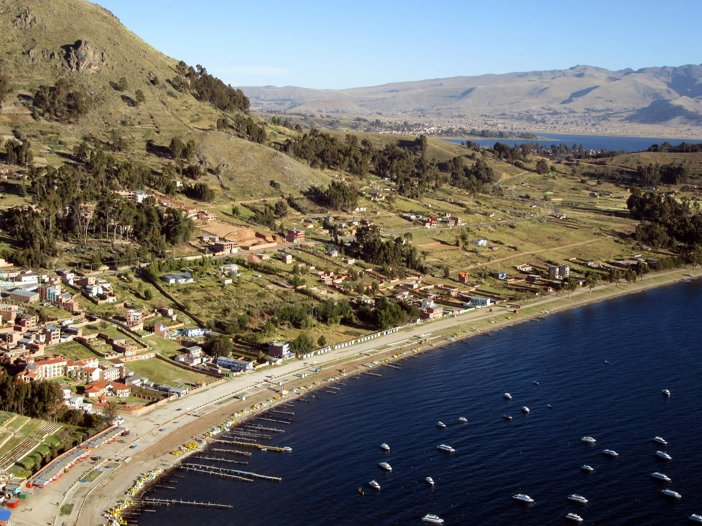
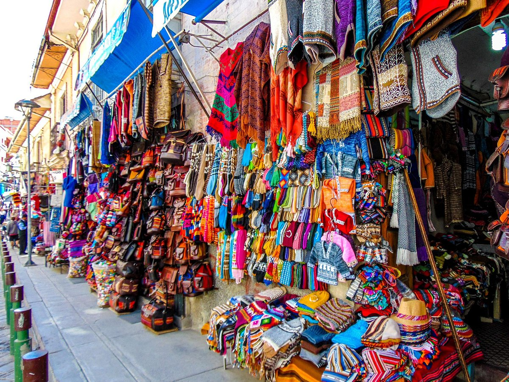
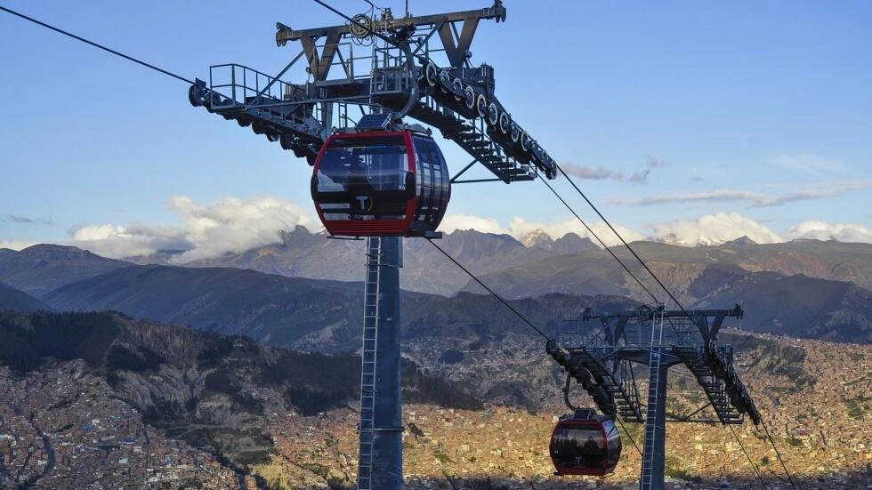
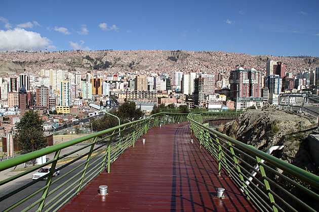

La Paz
Tiwanaku (Tiahuanaco o Tiahuanacu) es un
importante sitio arqueológico precolombino. Tiwanaku es reconocido por los eruditos andinos como uno de
los precursores más importantes del Imperio Inca, que floreció como la capital administrativa y ritual
de un gran poder estatal durante aproximadamente quinientos años. Las ruinas del antiguo estado de la
ciudad están cerca de la costa sureste del Lago Titicaca, a unos 72 km (44 millas) al oeste de La Paz.
Copacabana es un pequeño pueblo ubicado en
la costa boliviana del lago Titicaca. Situado relativamente cerca de la capital de La Paz, es un
popular destino turístico para viajeros extranjeros y locales.
Copacabana solía ser considerada una "región mística", un centro ceremonial de diversas culturas que
existió allí antes de la época colonial y en la actualidad se considera un centro de peregrinación
religiosa a menudo visitado por devotos creyentes de la "Virgen Morena", la Santísima Virgen de
Copacabana. Los feligreses vienen a este lugar para recibir las bendiciones de la Virgen María y para
hacer la tradicional "Ch'alla" (palabra aymara, que se refiere a una práctica ritual en Bolivia, en la
cual la propiedad es "bendecida" con la creencia de que esta bendición protegería las posesiones de
las personas).
Cerca de la ciudad de Copacabana hay varias atracciones prehispánicas como "La Horca", "El Baño" y "El
Asiento del Inca", todos que forman parte de un legado impresionante e histórico que se puede
encontrar diseminado por toda la zona, incluidas las islas del Sol y la Luna.
Teleferico, las rutas del Teleférico: una forma única y
emocionante de disfrutar de las vistas de La Paz y sus alrededores. La línea de teleféricos más larga
del mundo y que sirve de transporte público para los paceños, permite disfrutar de vistas
espectaculares
de la ciudad y las montañas circundantes.
Justo en pleno centro de La Paz, se
encuentra el Mercado de las Brujas. Esta es una de las principales y más
impresionantes atracciones
dentro de los límites de la ciudad. Este mercado se extiende por tres calles diferentes de estilo
colonial, básicamente tiene una serie de comercios montados sobre las aceras, algunos de estos
comercios también cuentan con trajes típicos, hechos a mano con materiales completamente naturales
(mayormente camélidos y fibras y cueros de oveja), hay También se encuentran souvenirs elaborados en
oro, plata, bronce y estaño de baja pureza, y otros adornos elaborados en maderas exóticas, talladas
con motivos ancestrales y muchas otras cosas.
Calle Jaén, una calle histórica empedrada en el centro de
la
ciudad que
alberga varios museos fascinantes, cafés y bares tradicionales.
Por su topografía, La Paz tiene muchos miradores desde donde se
puede apreciar las diferentes caras de la ciudad. El mirador más visitado es el de Killi Killi, desde
donde se disfruta de una vista panorámica de la ciudad en 360°. Es, especialmente, hermoso al
atardecer,
cuando la ciudad se va iluminando.
Mercado Rodríguez que tiene un conglomerado de pequeños mercados y tambos
más
antiguos de La Paz, es un lugar bullicioso y vibrante donde se puede probar alimentos locales, frutas
frescas, jugos y platos tradicionales.
Para los que buscan aventura de montaña, el Huayna
Potosí es una opción emocionante. A solo unas horas de La Paz, este pico de 6.088 metros ofrece la
oportunidad de escalar y disfrutar de vistas impresionantes.
La zona Sur de La Paz, conocida como la zona residencial de la ciudad, se
caracteriza por tener un par de grados más de temperatura, casas residenciales, comercios grandes e
importantes y, actualmente, se están convirtiendo en la zona de los restaurantes y cafés de autor,
cocina fusión y gourmet.

Plaza Murillo
Plaza Murillo corazón de la ciudad, cuyo entorno alberga Palacio Quemado, Asamblea Legislativa y Catedral Metropolitana. Aquí se disfruta de un ambiente vibrante y se observa la vida cotidiana de los paceños.

Miradores
Miradores, por su topografía, La Paz tiene muchos miradores desde donde se puede apreciar las diferentes caras de la ciudad. El mirador más visitado es el de Killi Killi, desde donde se disfruta de una vista panorámica de la ciudad en 360°. Es, especialmente, hermoso al atardecer, cuando la ciudad se va iluminando.